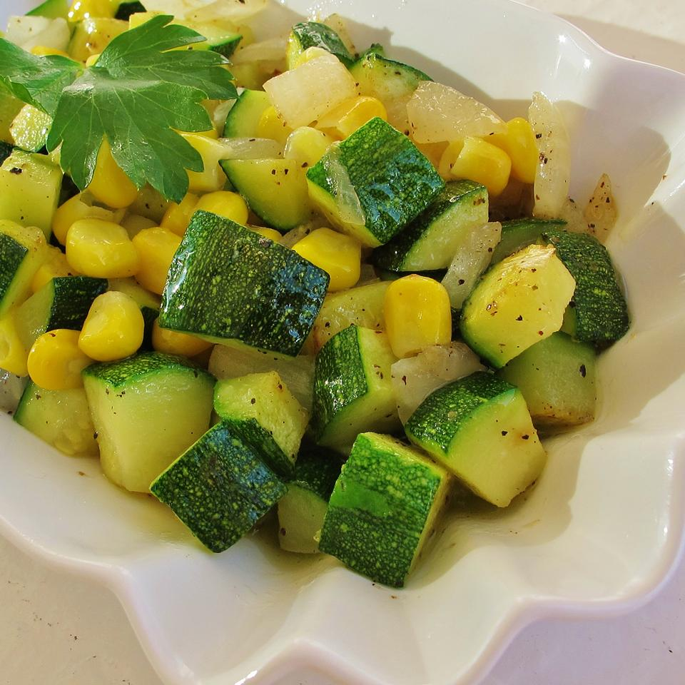

Corn and Zucchini Salad

Description
This is a great way to use two of the season's most bountiful crops. Kernels of corn fresh from the cob and tender zucchini are put to wonderful use in this simple and satisfying summer side dish.
-Serves 4 people
Ingredients
- 1/4 cup butter
- 1/2 small white onion, finely diced
- 3 small zucchinis, diced
- 3 ears corn, husks and silk removed
- sea salt to taste
- freshly ground black pepper to taste
Steps
- Heat butter in a skillet over medium heat, stirring occasionally, until lightly browned, 1 to 2 minutes.
- Cook and stir onion in the melted butter until translucent, about 5 minutes
- Cut kernels from the ears of corn.
- Add zucchini and corn.
- Cook and stir until zucchini is tender, about 8 minutes.
- Season with sea salt and pepper.